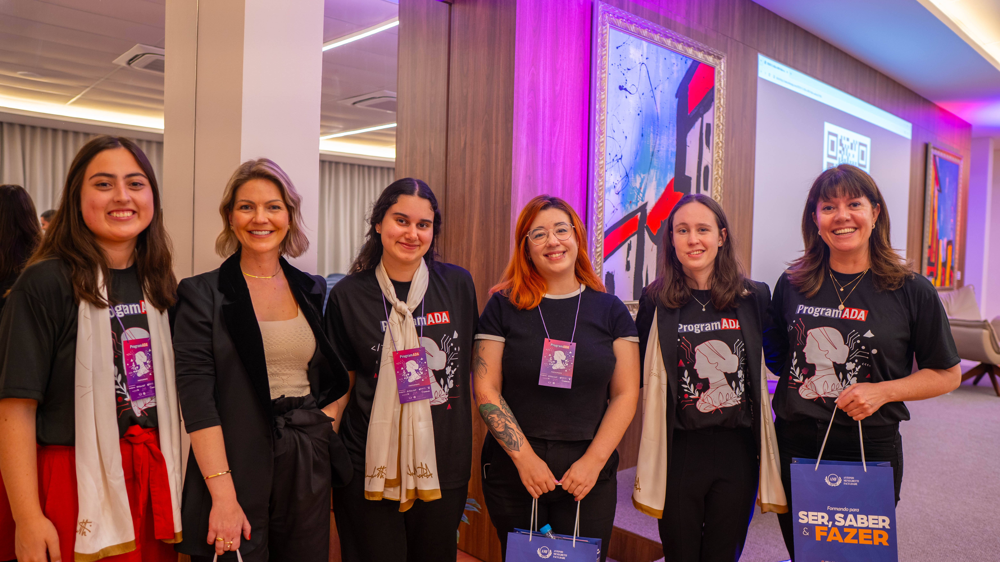

Patricia Wazlawick
palestra sobre "Vida, Inteligência e Tecnologia" e sua viagem para Estônia
Espaço dedicado para mostrar todas as possibilidades que a área da tecnologia oferece para sua carreira.
O ProgramADA surgiu da vontade de ter um espaço dedicado às mulheres do curso, focado em mostrar todas as possibilidades que a área da tecnologia oferece. Percebemos que faltava um momento para discutir carreira e entender onde as estudantes podem chegar dentro do mercado tech.
Para a nossa primeira edição, tivemos a participação da Patrícia Wazlawick, da Monica Hillman e da Franciele Manfio. O foco principal foi o protagonismo feminino na tecnologia, onde discutimos os desafios da área, as oportunidades de mercado e como as mulheres podem ocupar espaços de liderança e inovação.
palestra sobre "Vida, Inteligência e Tecnologia" e sua viagem para Estônia

palestra sobre carreira tech e suas experiências na Alura e Magalu

palestra sobre empreendedorismo e liderança


